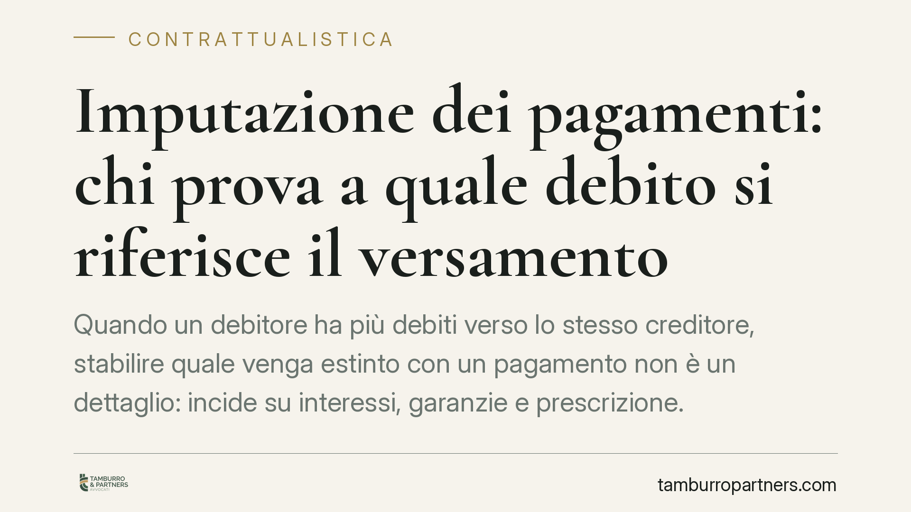

Imputazione dei pagamenti: chi prova a quale debito si riferisce il versamento
Quando un debitore ha più debiti verso lo stesso creditore, stabilire quale venga estinto con un pagamento non è un dettaglio: incide su interessi, garanzie e prescrizione. La Cassazione ha ribadito come funziona l'imputazione dei pagamenti e su chi grava l'onere della prova. Un chiarimento utile a chi paga e a chi incassa.

Il problema: un pagamento, più debiti
Capita spesso nei rapporti commerciali continuativi. Un cliente ha aperto verso lo stesso fornitore diverse posizioni debitorie: una fattura scaduta, un finanziamento residuo, una penale contrattuale. Quando arriva un versamento parziale, a quale debito si imputa?
La domanda non è teorica. Imputare il pagamento a un debito piuttosto che a un altro cambia il calcolo degli interessi, può liberare una garanzia, può interrompere o meno la prescrizione di una singola posizione.
Inquadramento normativo
La regola cardine è nell'art. 1193 del codice civile. Il primo comma riconosce al debitore la facoltà di dichiarare, all'atto del pagamento, quale debito intende estinguere. È una scelta che spetta a chi paga, purché espressa nel momento in cui adempie.
Se il debitore non indica nulla, interviene il secondo comma con criteri legali di imputazione: si considera estinto il debito scaduto; tra più debiti scaduti, quello meno garantito; tra debiti ugualmente garantiti, il più oneroso per il debitore; a parità, il più antico. Se tutti questi criteri non risolvono, l'imputazione avviene proporzionalmente.
Sul piano probatorio opera l'art. 2697 c.c., che ripartisce l'onere della prova. Chi vuol far valere un diritto deve provarne i fatti costitutivi; chi eccepisce l'inefficacia o una diversa collocazione deve provare i fatti su cui l'eccezione si fonda.
Cosa ha chiarito la Cassazione
La Seconda Sezione civile ha tracciato una linea netta. Il debitore che sostiene di aver estinto uno specifico debito deve provare di aver effettuato quella dichiarazione di imputazione al momento del pagamento. Non basta affermarlo dopo: la scelta si esercita quando si paga.
Sul versante opposto, il creditore che voglia contestare quella imputazione, sostenendo che il pagamento serviva a coprire un debito diverso, deve provare l'esistenza degli altri debiti e la loro riferibilità al versamento ricevuto. Non può limitarsi a negare: deve dimostrare il quadro debitorio su cui fonda la sua diversa lettura.
In sostanza, ciascuna parte prova ciò che afferma. Il debitore prova la propria dichiarazione; il creditore prova gli altri crediti che giustificherebbero una diversa imputazione.
Implicazioni pratiche
Per chi paga, il messaggio è chiaro: la contestualità della dichiarazione è tutto. Un bonifico con causale generica lascia campo aperto ai criteri legali dell'art. 1193, che non sempre coincidono con l'interesse di chi versa. Il debitore che vuole estinguere prima il debito più oneroso, o quello coperto da fideiussione, deve dirlo subito e per iscritto.
Per chi incassa, la prudenza sta nella tracciabilità. Un creditore con più rapporti aperti verso lo stesso soggetto deve conservare l'evidenza contabile di ogni posizione. In caso di contestazione, sarà chiamato a ricostruire l'intero rapporto, non a limitarsi a incassare senza registrare.
Un'annotazione sulla causale nella distinta di pagamento, nella email di accompagnamento o nella contabile bancaria può risultare decisiva in giudizio. La prova documentale, in questa materia, pesa più delle dichiarazioni successive.
Cosa fare in concreto
- Indica sempre la causale: al momento del pagamento specifica per iscritto quale debito intendi estinguere (numero fattura, data, importo di riferimento).
- Conserva la documentazione: bonifici, distinte, email e contabili vanno archiviati collegati alla singola posizione debitoria.
- Verifica il quadro complessivo: prima di pagare, ricostruisci tutte le posizioni aperte con la controparte per evitare imputazioni sfavorevoli.
- Se sei creditore, registra ogni posizione: tieni una contabilità che consenta di distinguere e provare ciascun credito autonomamente.
- Formalizza gli accordi di imputazione: quando le parti concordano l'ordine di estinzione, mettilo per iscritto con firma di entrambe.
---
Contributo informativo a cura di Tamburro & Partners - Avv. Giuseppe Tamburro. Non costituisce parere legale.
Ogni contratto ha il suo equilibrio.
Se vuoi una revisione delle clausole o una redazione su misura, scrivi allo studio. Ti rispondiamo entro un giorno lavorativo.